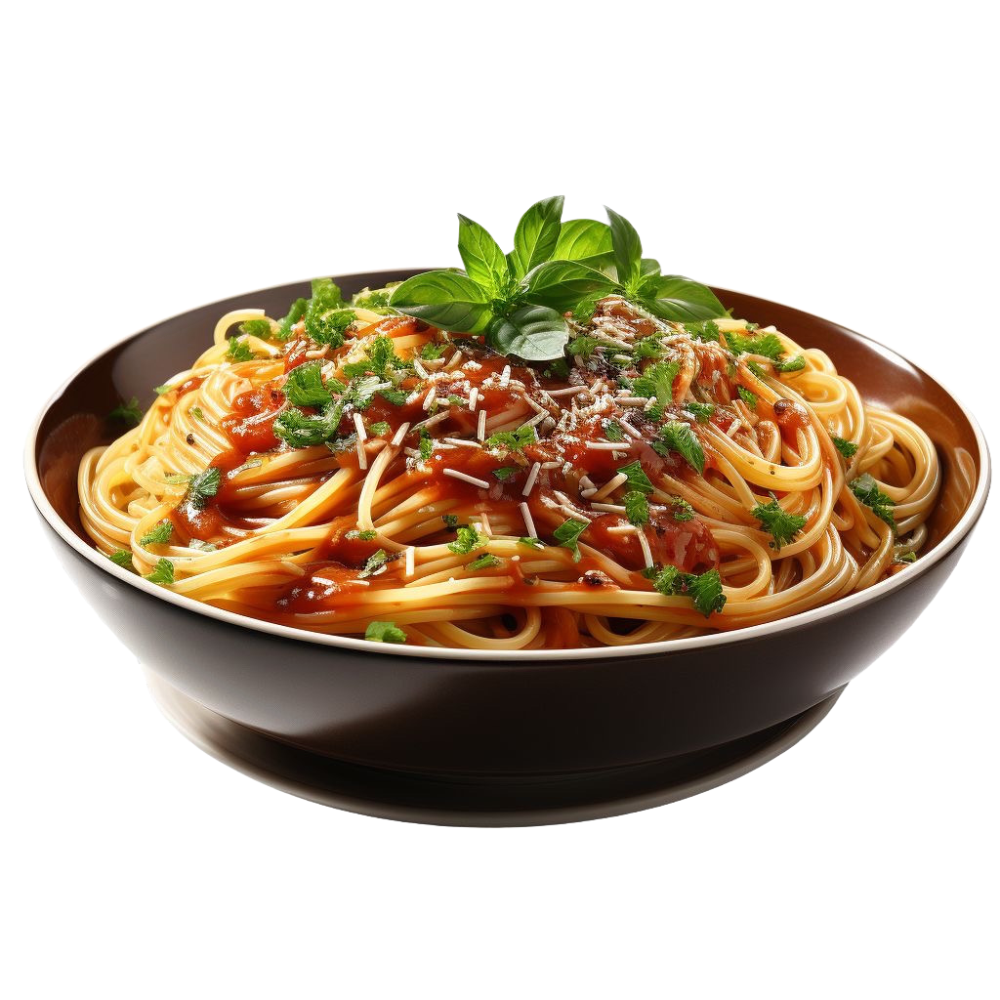

Spaghetti
INGREDIENTS
- 200g spaghetti
- 2 tbsp olive oil
- 2 garlic cloves (minced)
- 1 cup tomato sauce
- 1 tsp dried basil
- Salt and pepper to taste
- Parmesan cheese for topping (optional)
WHAT TO DO
- Cook pasta according to package directions, then drain.
- In a pan, heat olive oil and sauté garlic until golden.
- Add tomato sauce, basil, salt, and pepper. Simmer for 5-7 minutes.
- Toss pasta with sauce and top with parmesan.
Nutritional Facts
| Calories |
Protein |
Total Fat |
| 320 kcal |
10g |
5g |
